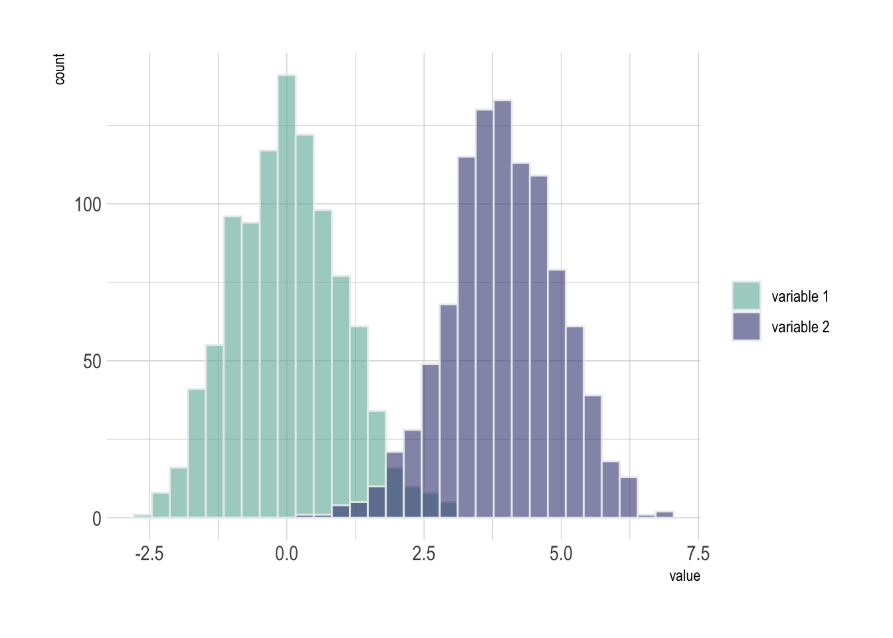
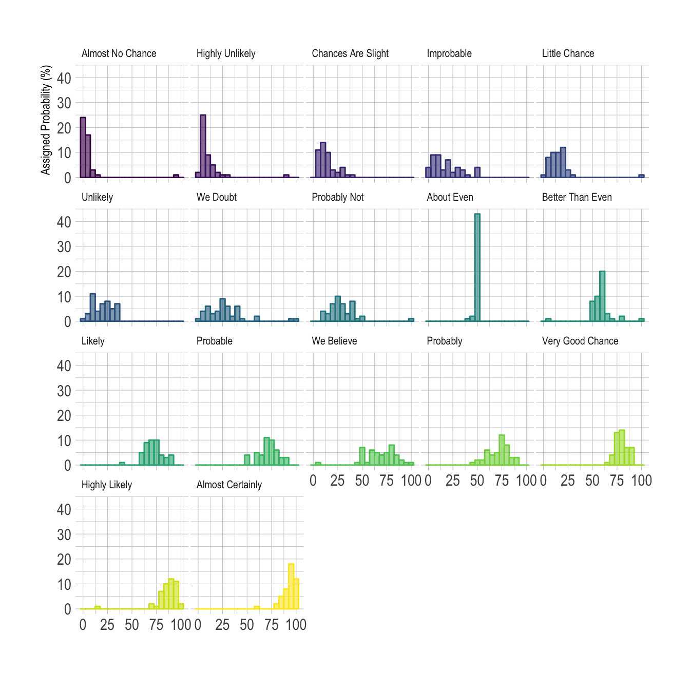

Related chart types

Violin

Density

Histogram

Boxplot

Ridgeline
If the number of group or variable you have is relatively low, you can display all of them on the same axis, using a bit of transparency to make sure you do not hide any data.
Note: with 2 groups, you can also build a mirror histogram
# library
library(ggplot2)
library(dplyr)
library(hrbrthemes)
# Build dataset with different distributions
data <- data.frame(
type = c( rep("variable 1", 1000), rep("variable 2", 1000) ),
value = c( rnorm(1000), rnorm(1000, mean=4) )
)
# Represent it
p <- data %>%
ggplot( aes(x=value, fill=type)) +
geom_histogram( color="#e9ecef", alpha=0.6, position = 'identity') +
scale_fill_manual(values=c("#69b3a2", "#404080")) +
theme_ipsum() +
labs(fill="")
If the number of group you need to represent is high, drawing them on the same axis often results in a cluttered and unreadable figure.
A good workaroung is to use small multiple where each group
is represented in a fraction of the plot window, making the figure
easy to read. This is pretty easy to build thanks to the
facet_wrap() function of ggplot2.
Note: read more about the dataset used in this example here.
# Libraries
library(tidyverse)
library(hrbrthemes)
library(viridis)
library(forcats)
# Load dataset from github
data <- read.table("https://raw.githubusercontent.com/zonination/perceptions/master/probly.csv", header=TRUE, sep=",")
data <- data %>%
gather(key="text", value="value") %>%
mutate(text = gsub("\\.", " ",text)) %>%
mutate(value = round(as.numeric(value),0))
# plot
p <- data %>%
mutate(text = fct_reorder(text, value)) %>%
ggplot( aes(x=value, color=text, fill=text)) +
geom_histogram(alpha=0.6, binwidth = 5) +
scale_fill_viridis(discrete=TRUE) +
scale_color_viridis(discrete=TRUE) +
theme_ipsum() +
theme(
legend.position="none",
panel.spacing = unit(0.1, "lines"),
strip.text.x = element_text(size = 8)
) +
xlab("") +
ylab("Assigned Probability (%)") +
facet_wrap(~text)
Related chart types